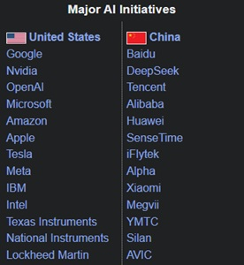
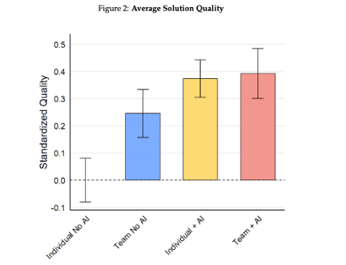
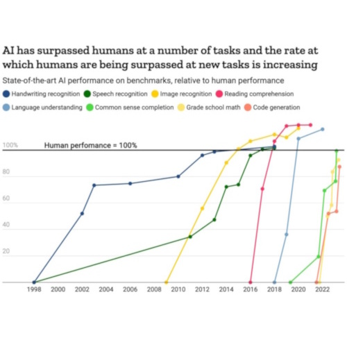
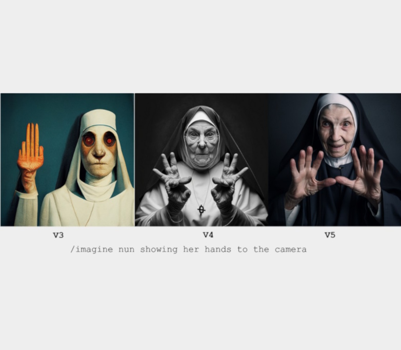

home The AI Revolution
Overview
Unprecedented advances in artificial intelligence have left the world in a state of uncertainty. It's left people with many questions, that the data can help us answer.
Throughout the 2010s, advances occurred in Artificial Intelligence research that were largely confined to the realm of fascination.
All of a sudden, a paradigm shift occurred. The start of this change corresponds to the release of ChatGPT in November 2022
star AI Search Trends
visibilityThe AI Arms Race
The rapid development in AI has resulted in an artificial intelligence arms race between world powers, namely the United States and China.
lightbulbRising AI Competence

Workplace Performance of Teams with and without AI
From Dell'Acqua et al. (2025)

Progress of AIs in performing tasks
Source: TIME Magazine, ContextualAI

Progression of Midjourney Image Generation
bar_chart AI and Productivity